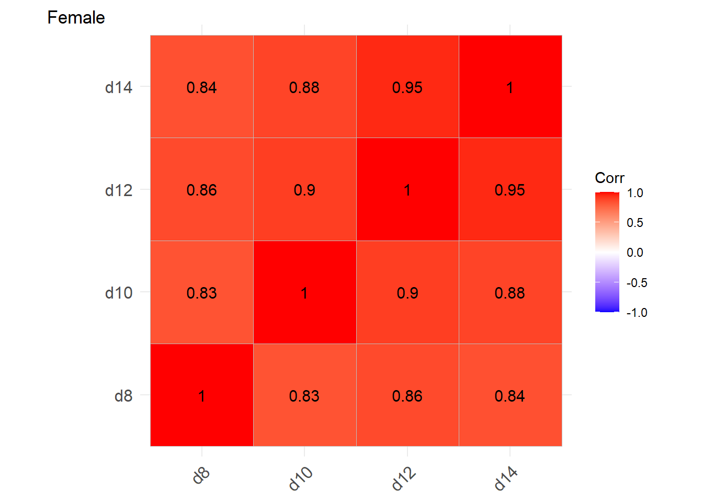

library(haven)
library(ggplot2)
library(dplyr)
library(tidyr)
library(stringr)
library(mice)
library(ggcorrplot)
library(gtsummary)2 Generalized Estimating Equation
2.1 Data description
Potthoff and Roy growth data:
Growth measurements for 27 children (11 girls and 16 boys)
Distance (in mm) from the centre of the pituitary gland to the pterygo-maxillary fissure recorded at ages 8, 10, 12 and 14 years.
Interested in the differences between males and females in pattern of growth over the 4 time points (from age 8 to 14 years).
potthoffroy |>
pivot_longer(cols = -c(id,sex)) |>
mutate(age = str_extract(name,'\\d+') |> as.numeric()) |>
ggplot(aes(x = age,y = value))+
geom_line(aes(group = id))+
facet_wrap(~sex)+
theme_bw()
We consider the correlation of the value in male and female group
potthoffroy |>
filter(sex == "M") |>
select(-c(id,sex)) |>
cor(use="pairwise.complete.obs")|>
ggcorrplot(lab = TRUE) +
labs(tag = "Male")
potthoffroy |>
filter(sex == "F") |>
select(-c(id,sex)) |>
cor(use="pairwise.complete.obs")|>
ggcorrplot(lab = TRUE) +
labs(tag = "Female")
NoteConclusion
Positive correlations within-cluster. Greater for Females than Males.
2.2 Fitting OLS
data <- potthoffroy |>
pivot_longer(cols = -c(id,sex)) |>
mutate(age = str_extract(name,'\\d+') |> as.numeric(),
sex = factor(sex,labels = c(0,1)))
lm_model <- lm(value ~ sex + age, data = data)
summary(lm_model)
Call:
lm(formula = value ~ sex + age, data = data)
Residuals:
Min 1Q Median 3Q Max
-5.9882 -1.4882 -0.0586 1.1916 5.3711
Coefficients:
Estimate Std. Error t value Pr(>|t|)
(Intercept) 15.38569 1.12857 13.633 < 2e-16 ***
sex1 2.32102 0.44489 5.217 9.20e-07 ***
age 0.66019 0.09776 6.753 8.25e-10 ***
---
Signif. codes: 0 '***' 0.001 '**' 0.01 '*' 0.05 '.' 0.1 ' ' 1
Residual standard error: 2.272 on 105 degrees of freedom
Multiple R-squared: 0.4095, Adjusted R-squared: 0.3983
F-statistic: 36.41 on 2 and 105 DF, p-value: 9.726e-13
Warning
Pretend observations independent – WRONG!!
The estimation of beta (sex, age, intercept) is unbiased, but the standard errors are incorrect if the covariance is not independent.
2.3 How can we estimate the correct variance of the OLS estimator when the data are not independent?
Robust / empirical / “sandwich” variance estimator:
Use actual correlations observed in the data (i.e. empirical correlations)
Robust – for a large number of clusters it converges to the correct variance of the OLS parameter estimate, irrespective of what the true covariance V is, as long as the corrected model for the mean of Y has been specified.
Sandwich: the data driven empirical estimator is the “meat” in the sandwich between two model-based terms (“slices of bread”)
library(lmtest)
library(sandwich)
lm_model <- lm(value ~ sex + age, data = data)
## Robust step
cov_cl <- vcovCL(lm_model, cluster = data$id)
cov_cl (Intercept) sex1 age
(Intercept) 0.87447024 -0.3160789 -0.050590613
sex1 -0.31607886 0.5948969 -0.006492700
age -0.05059061 -0.0064927 0.005173734se_robust_model <- coeftest(lm_model, vcov = cov_cl)
se_robust_model
t test of coefficients:
Estimate Std. Error t value Pr(>|t|)
(Intercept) 15.385690 0.935131 16.4530 < 2.2e-16 ***
sex1 2.321023 0.771296 3.0093 0.003279 **
age 0.660185 0.071929 9.1783 4.268e-15 ***
---
Signif. codes: 0 '***' 0.001 '**' 0.01 '*' 0.05 '.' 0.1 ' ' 1Compare
lm_model |>
tbl_regression(
intercept = TRUE,
estimate_fun = purrr::partial(style_ratio, digits = 3)) |>
remove_row_type(
type = "reference"
)| Characteristic | Beta | 95% CI | p-value |
|---|---|---|---|
| (Intercept) | 15.39 | 13.15, 17.62 | <0.001 |
| sex | |||
| 1 | 2.321 | 1.439, 3.203 | <0.001 |
| age | 0.660 | 0.466, 0.854 | <0.001 |
| Abbreviation: CI = Confidence Interval | |||
se_robust_model |>
tbl_regression(
intercept = TRUE,
estimate_fun = purrr::partial(style_ratio, digits = 3)
) | Characteristic | Beta | 95% CI | p-value |
|---|---|---|---|
| (Intercept) | 15.39 | 13.53, 17.24 | <0.001 |
| sex1 | 2.321 | 0.792, 3.850 | 0.003 |
| age | 0.660 | 0.518, 0.803 | <0.001 |
| Abbreviation: CI = Confidence Interval | |||
Sex: difference in mean outcome between sexes at any age = between-subject comparison
SE with robust > SE assuming independence (0.7712956 > 0.4448862)
Between cluster comparison is LESS precise with positive within-subject correlation
Age: effect estimated within-subject.
SE with robust < SE independence ( 0.0719287 > 0.0977589)
Within-cluster comparison is MORE precise with positive correlation